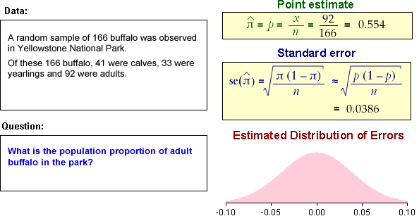

| error = p − π ~ normal (0, | ) |
Normal approximation to the error distribution
If the sample size, n, is large enough, the binomial distribution is approximately normal, so we have the approximation
| error = p − π ~ normal (0, | ) |
You will see later that it is often easier to use this normal approximation than the binomial distribution.
Closeness of the normal approximation
The diagram below shows the binomial distribution for the errors in simulations with probability π of success (red) and its normal approximation (grey).
Use the sliders to verify that
The normal approximation to the error distribution is therefore reasonable provided the sample size is reasonably large and π is not close to 0 or 1. (We will give better guidelines later.)
The following examples illustrate how the standard error is found and the normal approximation to the error distribution is sketched for each.
Examples
Each of the following data sets was collected to provide information about an unknown probability.

In each example, the sample size, n, is large so the errors are approximately normal. The diagram on the bottom right shows the approximate normal distribution for the errors — its mean is zero (the bias) and its standard deviation is the standard error of the estimator.
In each example, the error distribution gives a good indication of how far the sample proportion is likely to be from the true probability.